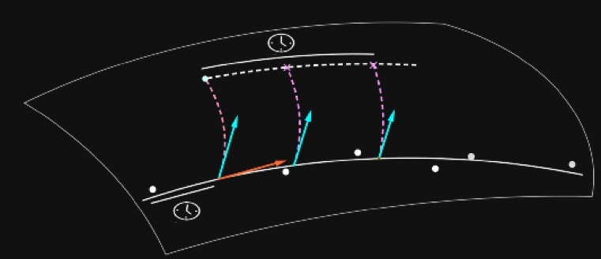

Let $(M,g)$ be a Riemannian manifold, $p\in M$ and consider the exponential map $\exp_p:T_pM\to M$; fix
Consider now the vector-fields $\partial_t$, $\partial_\theta$ on $\R\times\mathbb S^1$:
Note that: $$\nabla_XX=0\qquad [X,J]=f_*[\partial_t,\partial_\theta]=0\;.$$
We notice that $[X,J]=0$ implies $$\nabla_XJ-\nabla_JX=0\qquad R(X,J)X=\nabla_X\nabla_J X-\nabla_J\nabla_XX=\nabla_X\nabla_JX$$ so that, along a geodesic from $p$, $$\frac{D^2}{dt^2}J=\nabla_X\nabla_X J=\nabla_X\nabla_JX=R(X,J)X\;.$$
Given $\gamma:(-1,1)\to M$ a geodesic, a Jacobi vector-field along $\gamma$ is a vector-field $J(t)$ such that $$J''+R(J,\dot{\gamma})\dot{\gamma}=0\;.$$
If we want to apply the parallel transport to a vector $w\in T_pM$ along the geodesic starting from $p$ in the direction $v$, we can
We want to integrate the geodesic equation in the Hamiltonian formulation: $$\left\{\begin{array}{rcl}\dot{x}^i&=&g^{ij}\alpha_j\\\dot{\alpha}_i&=&-\frac{1}{2}\partial_{x^i}(g^{kj}\alpha_j\alpha_k)\end{array}\right.$$
We can use an order 2 Runge-Kutta method, so that at $t=1/N$ we will get an error of $O(1/N^2)$, which will sum up nicely on $N$ steps to $O(1/N)$.
We approximate $J(t+h)$ as $$\frac{\exp_{\gamma(t)}(h(\dot{\gamma(t)}+\epsilon w))-\exp_{\gamma(t)}(h\dot{\gamma}(t))}{\epsilon}\;.$$
We approximate $\exp$ again by solving the previous system for geodesics.
Starting point - we fix $N\in\mathbb N$, $x[0]$ a point , $v[0]$, $w[0]$ tangent vectors at $x[0]$.
Suppose we have images $V_i$ which constitute a time series, i.e. are images of the same object taken at successive times $t_1, t_2,\ldots$ (with equal or unequal time increments).
We are interested in understanding changes from one image to the other: one way to do so is to find the "best" diffeomorphism that transforms one image into the next.
Quantifying the adjective "best" means giving a distance on the space of diffeomorphisms.
This allows us to reproduce an evolution starting from a different image.